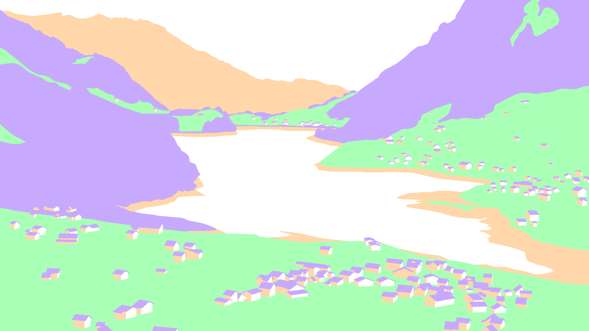

Illustrated Environment
For the Illustrated Environment I looked for locations in the Alps. It's a part of the world I really would like to visit someday. The landscapes are so gorgeous and breathtaking and really feel like someplace out of time and almost magical. I specifically looked for images with lakes in them and settled on a piqueresque town called Interlaken. The image I chose had a clear foreground, midground, and background, as well as a nice focal point in the lake, and a smattering of buildings that would give the resulting image a sense of scale.
Turning the image into a vector illustration using only three colors was an interesting challenge. While at first I wanted to bend the instructions a bit by getting more colors out of overlapping the colors or using different shades of the same color, as that could allow for much more realistic fading into the background and distinctions between different regions. Instead, I decided to stick to the stated instructions and try to work around the limitations to create something recognizable even if the coloring wasn't realistic.
After outlining the different mountains, the farmlands, forests, lake, and lakeshores I explored different color triads. I thought it was important to have a green as one of the three colors so that either the fields or forests would be recognizable, and settled on a green that would give a light orange that could be used for the further mountains and lakeshore, with the purple then left for the forests, which worked well as the most visually 'darkest' hue.
There were still a lot of details I could have worked into the image, but tried just the houses first, using one color for the sides in shadow, another for the roofs, and white for the sides facing the light. While not that detailed, it turned out to be enough to be recognizable, and added a nice patterning across the fields. While I tried experimenting with roads and other details I felt it started to clutter the image, and the houses themselves communicated a town the way they would on a map.
In the end, I'm pretty proud of the resulting illustration, and even with the lake being an unnatural white its shape alone reads as what it is and ties the image together.